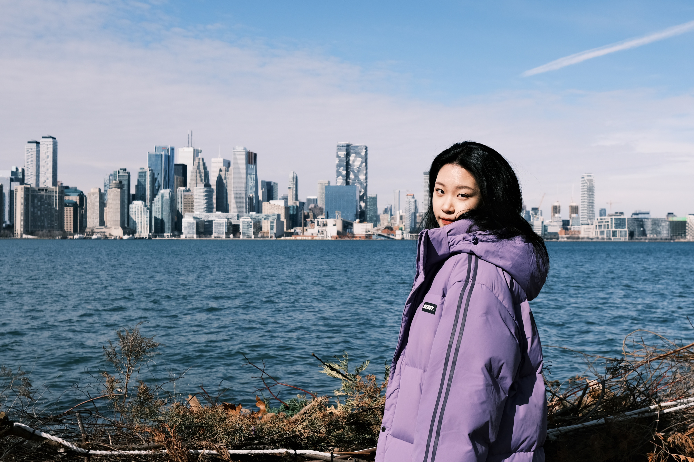

currently online
Hi, I'm Yinuo.
I like building things that are useful, expressive, and a little bit mischievous. My favorite projects sit somewhere between code, design, storytelling, and community.
mode
playful builder
energy
neon + human
mission
make tech feel warm
